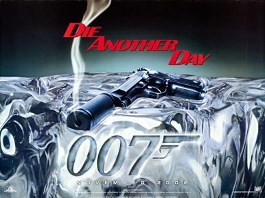
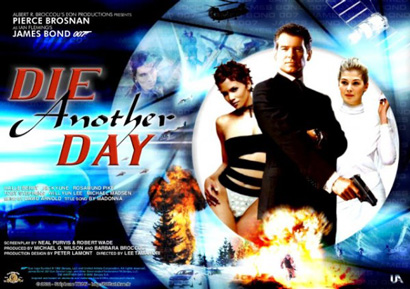
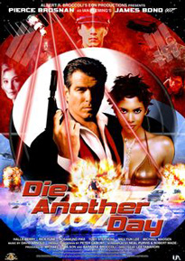
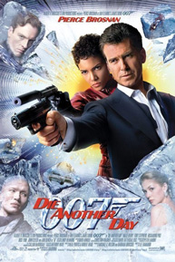
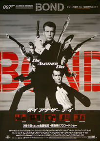
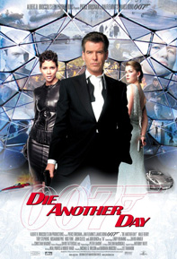
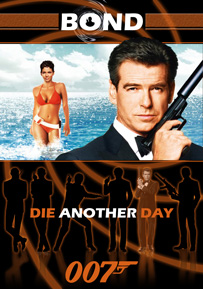
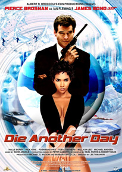

Barbara Broccoli
Robert Wade
Metro-Goldwyn-Mayer
20th Century Fox (International)
MI6 officer James Bond infiltrates a North Korean military base, where Colonel Tan-Sun Moon is illegally trading weapons for African conflict diamonds. After Moon's assistant Zao discovers that Bond is a British agent via an unknown source, Moon attempts to kill Bond and a hovercraft chase ensues, ending with Moon's apparent death. Bond survives, but is captured by North Korean soldiers and imprisoned by the Colonel's father, General Moon.
After fourteen months of captivity and torture, Bond is traded for Zao in a prisoner exchange. He is sedated and taken to meet M, who informs him that his status as a 00 Agent is suspended under suspicion of having leaked information under duress. Bond is convinced that he has been set up by a double agent in the British government and decides to avenge his betrayal. After escaping from the custody of MI6, he discovers that he is in Hong Kong, where he learns from a Chinese agent that Zao is in Cuba.
In Havana Bond meets NSA agent Giacinta 'Jinx' Johnson, with whom he is intimate. Later, Bond follows her to a gene therapy clinic, where patients can have their appearances altered through DNA restructuring. Bond locates Zao inside the clinic and attempts to kill him, but he escapes, leaving behind a pendant which leads Bond to a cache of diamonds, identified as conflict diamonds, but bearing the crest of the company owned by British billionaire Gustav Graves. Bond learns that Graves only appeared a year prior, apparently discovering a vein of diamonds in Iceland leading to his current wealth, celebrity and philanthropy from its assets.
At Blades Club in London Bond meets Graves, along with his assistant Miranda Frost, who is also an undercover MI6 agent. After a fencing exercise (and a literal sword-fight), Bond is invited by Graves to Iceland for a scientific demonstration. Shortly afterwards, M tells Bond of MI6's doubts about Graves, restores Bond's Double-0 status and offers assistance in the investigation.
At his ice palace adjacent to the diamond mine site in Iceland, Graves unveils a new orbital mirror satellite, "Icarus", which is able to focus solar energy on a small area and provide year-round sunshine for crop development. During the night, Jinx infiltrates Graves' command centre, but is captured by Graves and Zao. Bond rescues her and later discovers that Colonel Moon is still alive. Moon has used the gene therapy technology to change his appearance, creating the identity of Gustav Graves and amassing his fortune from sale of the conflict diamonds.
Bond confronts Graves, but Frost arrives to reveal herself as the traitor who betrayed Bond in North Korea, forcing Bond to escape from Graves' facility. Bond then returns in his Aston Martin Vanquish to rescue Jinx, who has been captured once again within the palace. As Graves uses Icarus to melt the ice palace, Zao pursues Bond into the palace using his own car. Bond kills Zao by causing a giant ice chandelier to fall onto him, and then revives Jinx after she has drowned.
Bond and Jinx pursue Graves and Frost to the Korean peninsula and stow away on Graves' cargo plane. Graves reveals his true identity to his father, and the true purpose of the Icarus satellite: to cut a path through the Korean Demilitarized Zone with concentrated sunlight, allowing North Korean troops to invade South Korea and reunite the peninsula by force. Horrified at the fact that it would result in a nuclear war with the United States, General Moon tries to turn the plan down, but he is murdered by his own son.
Bond attempts to shoot Graves, but he is prevented by one of the soldiers on board. In their struggle, a gunshot pierces the fuselage, causing the plane to descend rapidly. Bond engages Graves in a fist fight, and Jinx attempts to regain control of the plane. Frost attacks Jinx, forcing her to defend herself in a sword duel. After the plane passes through the Icarus beam and is further damaged, Jinx kills Frost. Graves attempts to escape by parachute, but Bond opens the parachute, causing Graves to be pulled out of the plane and into one of its engines, killing him and disabling the Icarus beam. Bond and Jinx then escape from the disintegrating plane in a helicopter from the cargo hold, carrying away Graves' stash of diamonds in the process. In the end, they are seen to have sex amidst the diamonds on a bed in a South Korean Buddhist temple located in a valley.
In early drafts of the script, Wai Lin (Michelle Yeoh) who aided Bond in Hong Kong in Tomorrow Never Dies was given a role, but the idea fell through and Chang was created to replace her.
Daniel Craig may have managed to wangle a pay deal that will make him the envy of his predecessors as James Bond – a cool £31 million for the next two instalments in the series (Skyfall and Spectre) – but it will still probably not to confer much gravitas upon him for some within his profession. Toby Stephens, the distinguished stage actor, who appeared as a baddie in Die Another Day and has been touted as a successor to Craig, says he can’t face appearing in another Bond film. “After [Die Another Day], I felt, 'I don’t want to do this any more because it uses about that much of my band-width,” Stephens says, holding up a finger and thumb just slightly apart. The affable 43-year-old son of the late Sir Robert Stephens and Dame Maggie Smith says he is concerned, too, about the typecasting that comes with Bond films. “Film and TV people go, 'You do that kind of thing,’ and that’s where they want to keep you.’ ” Happily, after Die Another Day, Stephens was able to re-establish his credentials as a proper actor with stage roles in Hamlet, A Doll’s House and Danton’s Death.
Principal photography of Die Another Day began on 11 January 2002 at Pinewood studios. The film was shot primarily in the United Kingdom, Iceland, and Cádiz, Spain. Other locations included Pinewood Studios' 007 Stage and Maui, Hawaii, in December 2001. Laird Hamilton, Dave Kalama, and Darrick Doerner performed the pre-title surfing scene at the surf break known as Jaws in Pe'ahi, Maui, while the shore shots were taken near Cádiz and Newquay, Cornwall. Scenes inside Graves' diamond mine were also filmed in Cornwall, at the Eden Project. The scenes involving the Cuban locations of Havana and the fictional Isla de Los Organos were filmed at La Caleta, Spain.
The scenes featuring Berry in a bikini were shot in Cádiz. The location was reportedly cold and windy, and footage has been released of Berry wrapped in thick towels between takes to avoid catching a chill. Berry was injured during filming when debris from a smoke grenade flew into her eye. The debris was removed in a 30-minute operation.
The film marked the James Bond franchise's 40th anniversary which began in 1962 with Sean Connery starring as Bond in Dr. No. Die Another Day includes references to each of the preceding films. Gadgets and other props from every previous Bond film and stored in Eon Productions' archives appear in Q's warehouse in the London Underground. Examples include the jetpack in Thunderball and Rosa Klebb's poison-tipped shoe in From Russia with Love. Q mentions that the watch he issues Bond is "your 20th, I believe", a reference to Die Another Day being the 20th Eon-produced Bond film.
In London, the Reform Club was used to shoot several places in the film, including the lobby and gallery at the Blades Club, MI6 Headquarters, Buckingham Palace, Green Park, and Westminster. Svalbard, Norway, and Jökulsárlón, Iceland were used for the car chase on the ice with additional scenes filmed at Jostedalsbreen National Park, Norway and RAF Little Rissington, Gloucestershire; Manston Airport in Kent was used for the scenes involving the Antonov cargo plane scenes. The scene in which Bond surfs the wave created by Icarus when Graves was attempting to kill Bond was shot on the blue screen. The waves, along with all the glaciers in the scene are computer-generated.
The hangar interior of the "US Air Base in South Korea", shown crowded with Chinook helicopters, was filmed at RAF Odiham in Hampshire, UK, as were the helicopter interior shots during the Switchblade sequence. These latter scenes, though portrayed in the air, were actually filmed entirely on the ground with the sky background being added in post-production using blue screen techniques. Although the base is portrayed in the film as a US base, all the aircraft and personnel in the scene are British in real life. In the film, Switchblades (one-person gliders resembling fighter jets in shape) are flown by Bond and Jinx to stealthily enter North Korea. The Switchblade was based on a workable model called "PHASST" (Programmable High Altitude Single Soldier Transport). Kinetic Aerospace Inc.'s lead designer, Jack McCornack was impressed by director Lee Tamahori's way of conducting the Switchblade scene and commented, "It's brief, but realistic. The good guys get in unobserved, thanks to a fast cruise, good glide performance, and minimal radar signature. It's a wonderful promotion for the PHASST."







